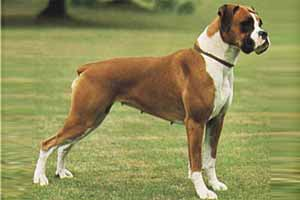
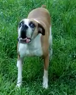

|  | LARA Levrand, es una Boxer Americana "Leonada", nacio en la provincia de Entre Rios, en Paraná hace ya 6 años es muy llorona, siempre pide las cosas, parece que habla, es un muy amable SER, sabe cuando estoy alegre, triste, cansado. |
| Sus características principales en cuanto al aspecto físico son: pelaje corto, fuerte y brillante, no tiene arrugas en la piel, se para ligeramente diferente al bóxer europeo debido a la forma de sus pies y posee hocico más amplio. Igualmente, el bóxer americano es un tanto más estilizado y alargado que el bóxer europeo y su pelaje presenta características atigradas (en algunos casos). |  |